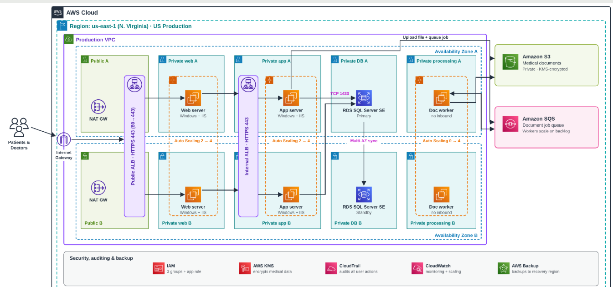

Cloud architecture · Academic case study
TigerMed
A proposed AWS migration for a fictional healthcare platform, with attention to regional patient data, security and recovery.
- Format
- Architecture proposal
- Context
- Academic / Not deployed
- Tools
- AWS, VPC, EC2, RDS, S3, SQS

The assignment
TigerMed is a fictional healthcare company from an AWS architecture assignment. The starting environment was Windows and IIS, with two web servers, two application servers and a SQL Server database. The question was how that could move to AWS without ignoring the security and operational needs of a healthcare application.
The proposal needed to support US, European and Asia-Pacific users, separate document processing from the application, and plan for failures at both the server and regional level.
This was a design and presentation exercise. I did not deploy a TigerMed environment or test it under production traffic.
How I designed it
The production reference design uses a VPC split across two Availability Zones. Public Application Load Balancers receive requests, while the Windows/IIS web servers, application servers and SQL Server database remain in private subnets.
In the proposed document workflow, files go into S3, jobs go into SQS, and a separate EC2 worker fleet processes the backlog. That keeps document processing from competing directly with interactive requests.
Security and regional controls
The public ALB is the only internet-facing entry point. Security groups permit traffic to move between specific tiers rather than opening private EC2 instances or RDS to the internet. The proposal also uses IAM roles, encryption with KMS and AWS service logs for infrastructure auditing.
A patient would have a designated home region. The application, not geographic DNS alone, would enforce record-level authorization and restrictions on where clinical data is stored.
Production was proposed for Northern Virginia, Frankfurt and Singapore. Recovery targets were Ohio, Zurich and Sydney. Regional failover would still require tested restore procedures.
Tradeoffs and cost
I compared the three-region plan with a smaller US-first rollout. A single-region start would be cheaper and simpler to operate, but it would not satisfy a requirement to store European and Asia-Pacific patient records locally from day one.
The monthly estimate wasn't a validated AWS quote. SQL Server licensing, transfer charges, backup growth and realistic workload measurements would need to be priced before anyone built this.
What comes next
The strongest next step would be replacing assumptions with measurements: actual CPU and memory demand, peak requests, document queue volume, backup objectives and regional compliance requirements. I'd use those findings to revise instance sizes, simulate failover and calculate a more defensible monthly budget.
The presentation is included below so you can read the complete architecture rationale and see the original diagrams.
Full presentation and architecture diagram
Academic proposal for a fictional organization. The presentation is available in PDF and PowerPoint.